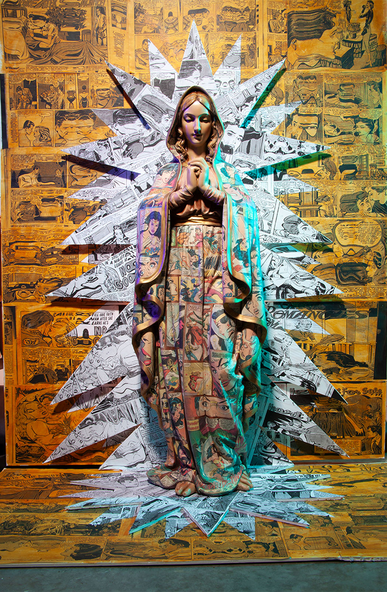
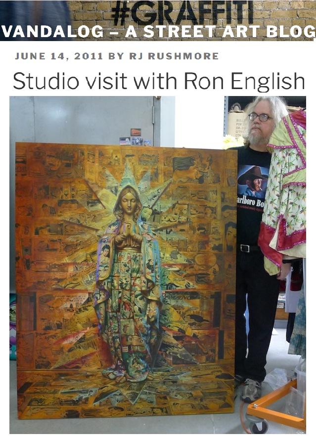

Exhibitions
Skin Deep: Post-Instinctual Afterthoughts on Psychological Portraiture, Lazarides Rathbone, London, United Kingdom, June 24–July 21, 2011.
Literature
Ron English, Death and the Eternal Forever (Korero Press, 2014), p. 36. ISBN 978-0957664920.
Ron English, Status Factory: The Art of Ron English (San Francisco: Last Gasp of San Francisco, 2014), p. 175. ISBN 978-0867197891.
Ron English, Original Grin: The Art of Ron English (Paris: Cernunnos, 2019), p. 252. ISBN 978-2374950938.
Notes
This work appears in Arrested Motion’s opening and exhibition photographs for Ron English’s Skin Deep: Post-Instinctual Afterthoughts On Psychological Portraiture at Lazarides Gallery.
A reference set assembled by Ron English is retained as supporting documentation for this work.
The work also appears in studio photographs published by Vandalog and Arrested Motion in June 2011.
This composition was later adapted by the artist as a related giclée print with silkscreen gloss on Somerset Enhanced Satin 330gsm paper, published by Lazarides Editions. The cited Art Collectorz page describes Virgin Romance as a signed limited edition of 50 measuring 70 × 50 cm, released at £375.
Ancillary Documentation
The following materials document the work through exhibition photography, studio documentation, reference material, and related print documentation.


Selected Online Circulation
Selected examples of the work’s online circulation, studio documentation, or exhibition coverage. This list is not exhaustive.